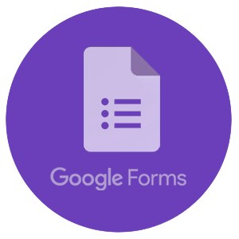

Voici le programme de l’intégration ! Pendant ces 3 semaines de folies, tu vas pouvoir rencontrer ta promo grâce aux nombreux évènements organisés. De quoi t’introduire à ta nouvelle vie étudiante ! Ne manque surtout pas le WEC et le WEI, deux week-ends phares de l’intégration à l’IMT Atlantique.
A ton arrivée, tu rencontreras de nombreux premières années comme toi,
mais également des deuxièmes années. Juste après le WEI, chaque deuxième
année choisira un nouvel arrivant et deviendra son parrain !
Ton
parrain te prendra sous son aile et te fera découvrir les nombreuses
traditions de l’école qui feront de toi le parfait Atlante !
Rempli ce petit questionnaire afin que ton parrain puisse te choisir en fonction de vos centres d’intérêts communs !
Ca y est ton parrain t’as choisi(e) ! Tu vas maintenant recevoir par SMS des défis à réaliser, avec pour chaque défi réussi, un indice sur l’identité de ton parrain. Aucun défi n’est obligatoire, ne fais pas ce que tu n’as pas envie de faire.
Après une longue semaine remplie de défis en tout genres, j’espère que
tu as récolté assez d’indices. C’est maintenant l’heure de la soirée
révélation des parrains. Trouve ton parrain grâce aux indices récoltés
!
Bon courage !
Tu as trouvé ton parrain ? Il va maintenant te présenter à ta nouvelle famille : les deuxièmes années forment tous des familles avec leurs potes. Cela te permettra de rencontrer d’autres deuxièmes années ainsi que leurs filleuls. Profite de tes repas de famille tout au long de l’année !